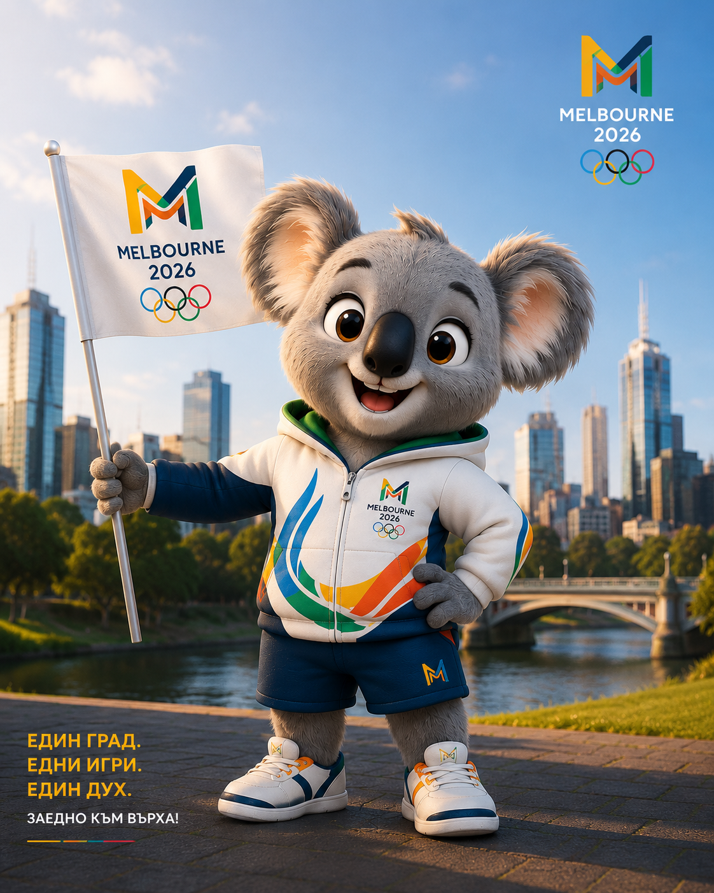
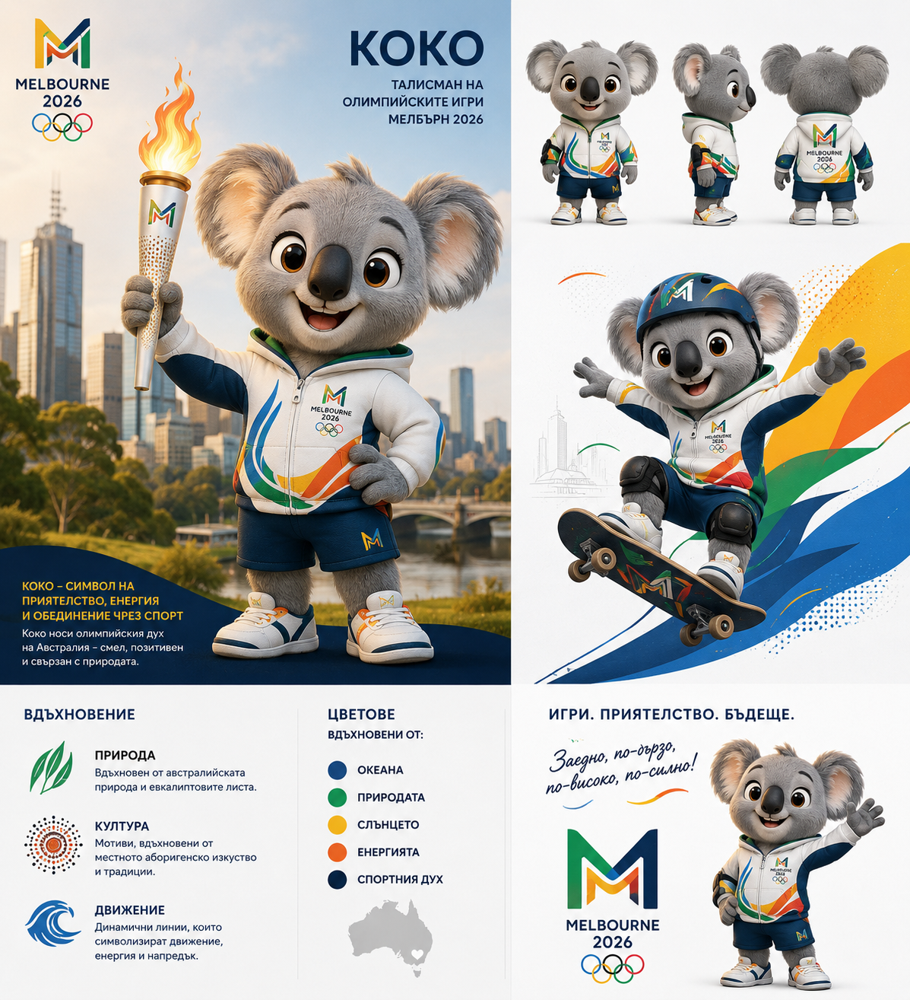
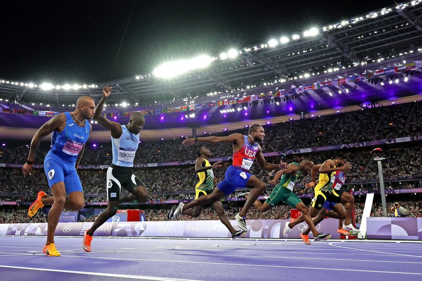
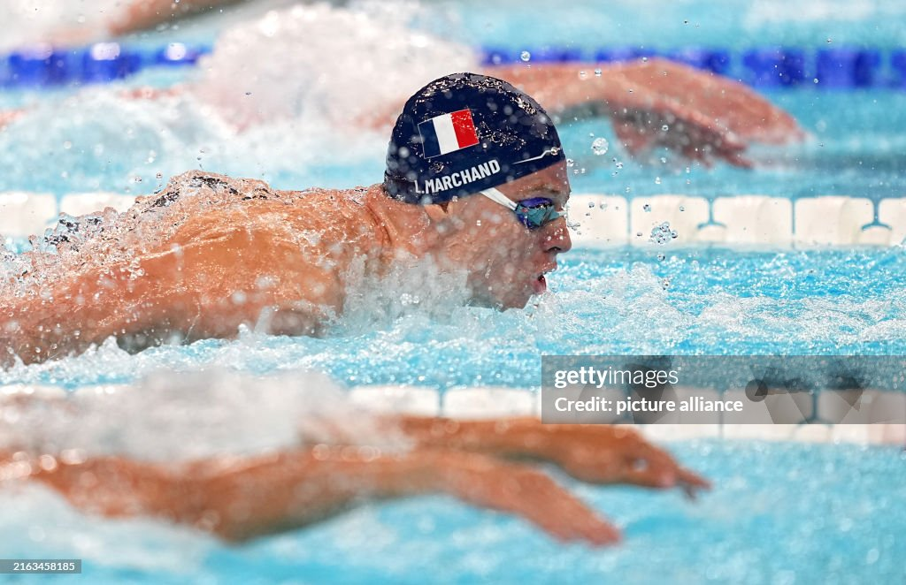
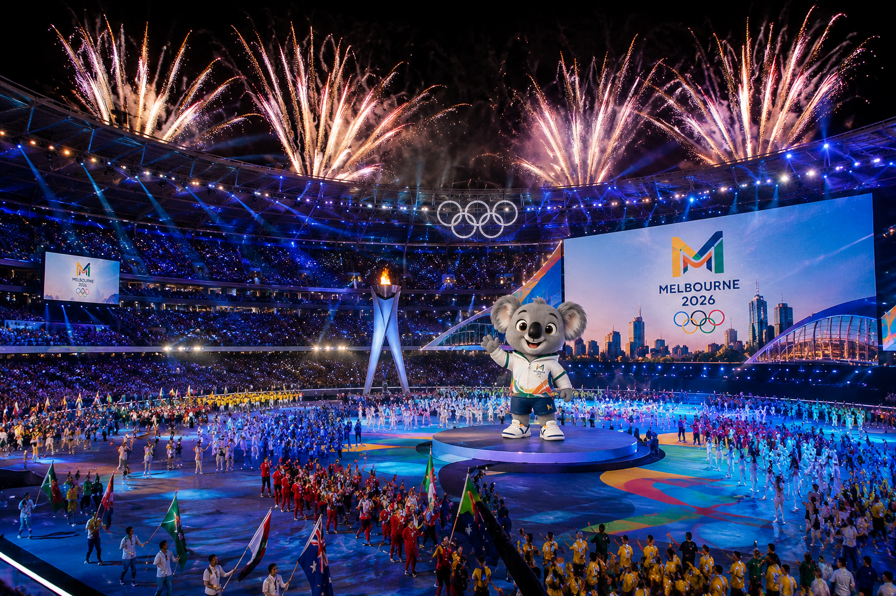

Международно спортно събитие, което събира спортисти от целия свят и представя най-доброто от спорта.
Летни олимпийски игри
Melbourne 2026: спорт, слънце и олимпийски дух
Сайтът представя летните Олимпийски игри в Мелбърн, Австралия - мястото, символите, талисмана и атмосферата на най-голямото спортно събитие.

Мелбърн Австралия
Летни игри
2026 година
Какво трябва да стане ясно още от началото
Главната страница дава бърз отговор на трите най-важни въпроса: какво е събитието, къде се провежда и защо е летен спортен празник.
Домакинът е град с голяма спортна култура, известни стадиони и силна връзка с международните събития.
Фокусът е върху спортове като лека атлетика, плуване, гимнастика, колоездене, тенис, футбол и волейбол.

Талисманът Коко
Коко е дружелюбна коала в олимпийски цветове. Талисманът свързва игрите с Австралия и прави страницата по-разпознаваема още от първия поглед.
Австралийски символ
Олимпийски цветове
Летен дух
Моменти от минали летни игри
Тези визуални карти показват типичната атмосфера на предишни летни Олимпийски игри - състезания, плуване и церемонии.

Лека атлетика
Спринтове, финали и моменти, в които секундите решават всичко.

Плуване
Един от най-популярните летни спортове, свързан с рекорди и силни емоции.

Церемонии
Открването и закриването показват културата, светлините и общия дух на игрите.
„По-бързо, по-високо, по-силно - заедно.“
Олимпийският девиз подхожда на Melbourne 2026, защото поставя акцент върху състезанието, напредъка и обединението чрез спорт.